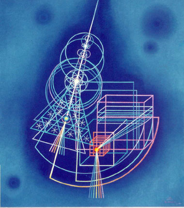

| |
|
|
Fig 1: Time Cycle No.
1, n.d.
|
Emil Bisttram (1895-1976) became interested in Theosophy in New York
in the 1920s, when he was first establishing himself as an artist. His
knowledge of the subject was enhanced by his relationships with some of
the most prominent Theosophists of the time, including Claude Bragdon
(1866-1947), Nicholas Roerich (1874-1947), and Manly P. Hall (1901-1990).1
At the same time he became interested in Dynamic Symmetry, a system of
picture composition based on Euclidean geometry, developed by Jay Hambidge
(1867-1924). Intrigued by the Theosophical axiom that religion and geometry
are integrally related, Bisttram developed an approach to painting--which
he fully explained in his teaching curricula--that brought the two systems
together. When Bisttram settled in Taos, New Mexico, in 1931, he found
a receptive audience for his ideas on Theosophy and spirituality, but
a mixed reaction to Dynamic Symmetry.2
In 1938, when he proposed the idea of founding what would become the Transcendental
Painting Group (TPG) to his three students, Horace Pierce (1914-58), Florence
Miller (b. 1918), and Robert Gribbroeck (1906-1971), spirituality was
central to his concept. Bisttram brought in the Santa Fe painter and architect
William Lumpkins (1910-2000), who then proposed the idea in Santa Fe.3
Bisttram's good friend Raymond Jonson (1891-1982) became the most active
member; his primary contribution was expanding and solidifying the membership,
bringing in the Canadian painter Lawren Harris (1885-1970), the California
painter Agnes Pelton (1881-1961), the New Mexico painter Stuart Walker
(1904-1940), and Dane Rudhyar (1895-1985) and Alfred Morang (1901-1958)
as writers to publicize the TPG. Harris, Pelton, and Rudhyar were all
avowed Theosophists.4
Harris was a well-heeled Canadian painter whom Jonson met in Santa Fe
in March 1938, while Harris and his wife were traveling cross-country.
Bisttram and Harris struck up a close friendship at this time, and Harris
took a number of classes on Dynamic Symmetry with Bisttram. Bisttram had
studied with Hambidge in New York in the early 1920s, and Harris, who
like Hambidge was Canadian, was already familiar with Dynamic Symmetry.
Bisttram's spiritual interpretation and application of Hambidge's system
must have been a strong factor in their friendship, especially since Harris
acquired Bisttram's drawing Time Cycle No. 1, n.d. (Fig. 1), one
of Bisttram's more complex uses of the system.4 While the circumstances
under which Harris acquired this drawing are not exactly known, the spiritual
dimensions of the drawing serve as an example of the type of work that
the TPG members were interested in.
This drawing uses primary geometric forms--circles, equilateral triangles,
squares, and cubes-to express the creative-destructive forces within the
universe, and to depict relationships between time and space as well as
between life and death. Bisttram provides the following interpretation
for this drawing:
Time Cycle No. 1 is also one of a series resulting from meditations
on time and space. In this particular drawing the lines of force or
energy permeating space, manifesting out of one source, having passed
through the various organizing centers, take on the geometric shapes
of our world before matter condenses or crystallizes on them. At the
same time the drawing has the suggestion of a pendulum in the shape
of a scythe, a reaper swinging in eternal space.6
The creative aspect of the forms is expressed by the descending series
of circles, triangles, and squares. This series follows Theosophical theory,
which postulates that creation is a geometrical progression, beginning
with a point. H. P. Blavatsky (1831-91), the most important exponent of
Theosophy in modern times, expressed this idea by citing Pythagorean theory,
one of the foundations of her approach:
In the Pythagorean Theogony the hierarchies of the heavenly Host and
Gods were numbered and expressed numerically. Pythagoras had studied
Esoteric Science in India; therefore we find his pupils saying "the
monad (the manifested one) is the principle of all things. From the
Monad and the indeterminate Duad (Chaos), numbers; from numbers, Points;
from points, Lines; from lines, Superficies; from superficies, Solids;
from these, solid Bodies, whose elements are four: Fire, Water, Air,
Earth; all of which transmuted (correlated) and totally changed, this
world consists."--(Diogenes Laerius in Vit. Pythag.)7
Bisttram's involvement with Theosophy and Dynamic Symmetry led him to
his interest in Kandinsky's use of geometric form, since it seemed to
him that Kandinsky's book Point and Line to Plane (1926) echoed
this basic Theosophical tenet. By utilizing a scythe in his image, Bisttram
also expresses the idea that death is the complement of creation, and
that the two working together alternately define the cyclic nature of
time. A source for the symbolism of the scythe is found in Max Heindel's
The Rosicrucian Cosmo-Conception (1909), a book which Bisttram studied
closely.8 Max Heindel (1865-1919), founder of the Rosicrucian
Society in Oceanside, California, commented on the scythe as follows:
This is the law that is symbolized in the scythe of the reaper, Death;
the law that says, "whatsoever a man soweth, that shall he also
reap." It is the law of cause and effect, which rules all things
in the three Worlds, in every realm of nature-physical, moral and mental.
Everywhere it works inexorably, adjusting all things, restoring the
equilibrium wherever even the slightest action has brought about a disturbance,
as all action must... The law we are now considering is called the law
of Consequence.9
Heindel is referring here to the law of karma. Heindel connects the scythe
with the concept of reincarnation by referring to it as a symbol of the
harvest of the permanent atom or Seed-Atom that occurs at the time of
death. This atom becomes the basis for the individual in his next life:
So man builds and sows until the moment of death arrives. Then the seed-time
and the periods of growth and ripening are past. The harvest time has
come, when the skeleton spectre of Death arrives with his scythe and
hour-glass. That is a good symbol. The skeleton symbolizes the relatively
permanent part of the body. The scythe represents the fact that this
permanent part, which is about to be harvested by the spirit, is the
fruitage of the life now drawing to a close. The hour-glass in his hand
indicates that the hour does not strike until the full course has been
run in harmony with unvarying laws. When that moment arrives a separation
of the vehicles takes place. As his life in the Physical World is ended
for the time being, it is not necessary for man to retain his dense
body. The vital body, which, as we have explained, also belongs to the
Physical World, is withdrawn by way of the head, leaving the dense body
inanimate. The higher vehicles--vital body, desire body and mind--are
seen to leave the dense body with a spiral movement, taking with them
the soul of one dense atom. Not the atom itself, but the forces that
played through it. The results of the experiences passed through in
the dense body during the life just ended have been impressed upon this
particular atom. While all the other atoms of the dense body have been
renewed from time to time, this permanent atom has remained. It has
remained stable, not only through one life, but it has been a part of
every dense body ever used by a particular Ego. It is withdrawn at death
only to reawaken at the dawn of another physical life, to serve again
as the nucleus around which is built the new dense body to be used by
the same Ego. It is therefore called the "Seed-Atom."10
While this quote suggests that there is only one Seed-Atom harvested at
the end of a life, later in the text Heindel explains that there are a
number of Seed-Atoms; one, in fact, for each of an individual's vehicles.
What I am suggesting, then, is that the bright spots in the centers of
the major forms of Bisttram's composition depict these Seed-Atoms that
are about to be harvested by the scythe at the end of a life. The ne in
the center of the cube and the one in the center of the triangle are specifically
marked with "tails" of seven lines each. Also, there seems to
be a type of Seed-Atom in the center of the circular form that marks the
handle of the scythe.
This interpretation leads more provocatively, however, to the conclusion
that Bisttram's series of geometrical forms is meant to represent an individual.
This is confirmed in Theosophical theory which conceives of man as a sevenfold
being, diagramed as a triangle supported by a square. Blatvasky, indeed,
diagrams man in just this way. She labels the upper three parts as: 1.
Universal Spirit (Atma); 2. Spiritual Soul (Buddhi); 3. Human Soul, Mind
(Manas); and the lower four as: 4. Animal Soul (Kama-Rupa); 5. Astral
Body (Linga Sarira); 6. Life Essence (Prana); 7. Body (Sthula Sarira).11
Bisttram's use and placement of the triangle and square and the presence
of seven tails on the Seed-Atoms within the triangle and square would
seem then to refer to Blavatsky's concept of man. Additionally, the moving
scythe seems like it is about to bring the square into alignment underneath
the triangle. This seems to refer to the concept of geometrical alignment
articulated by the Theosophist Alice Bailey (1880-1949) in her book Letters
on Occult Meditation (1922):
The aim of the evolution of man in the three worlds--the physical, emotional
and mental planes--is the alignment of his threefold Personality with
the body egoic, till the one straight line is achieved and the man becomes
the One.Each life that the Personality leads is, at the close, represented
by some geometrical figure, some utilisation of the lines of the cube,
and their demonstration in a form of some kind... The Master is He Who
has blended all the lines of fivefold development first into the three,
and then into the one. The six-pointed star becomes the five-pointed
star, the cube becomes the triangle, and the triangle becomes the one;
whilst the one (at the end of the greater cycle) becomes the point in
the circle of manifestation.12
|
|
Fig 2: This chart is labeled
on the top The Seven Planes of Our Solar System and on the bottom
The Constitution of Man
|
In the same book she also discusses Seed-Atoms or permanent atoms, and
provides a chart showing their location (Fig. 2). This chart is labeled
at the top The Seven Planes of Our Solar System and at the bottom The
Constitution of Man.13 The titles refer to the Theosophical
concept of man as a microcosm of the cosmic macrocosm. In this diagram
she draws a triangle connecting the atmic, buddhic, and mental permanent
atoms. The three angles of the triangle are 40, 110, and 30 degrees respectively.
Measuring the triangle formed by the three permanent atoms in Bisttram's
drawing, we find angles of 30, 120, and 30 degrees, essentially Bailey's
triangle reversed right to left.
According to Bailey, an individual operates, or is "polarised,"
by different permanent atoms at different periods of his life; when an
individual operates at the level of the three higher permanent atoms,
he is "a Master of the Wisdom."14 I suggest that
in Time Cycle I, Bisttram is depicting man as the microcosm of the cosmic
macrocosm, as well as man at his most evolved--operating at the highest
possible level at the time of his passing.
Another indication that Bisttram was studying Bailey can be seen in his
use of color, when he later executed this drawing in oils (Fig. 3). In
this same book, Bailey includes a section on color that gives a list of
"the seven streams of colour by which manifestation becomes possible":
1. Blue, 2. Indigo, 3. Green, 4. Yellow, 5. Orange, 6. Red, 7. Violet.
Bisttram used this color sequence for both of the seven-rayed tails of
the permanent atoms. It is an unusual sequence because the expected order
would be that of the spectrum, with purple on one end and red on the other.
Also, Bailey associates blue, the dominant color of Bisttram's painting,
with the perfected man and the auric envelope through which he manifests,
as well as with the auric egg and the Solar Logos.15
|  |
|
Fig 3: Another indication
that Bisttram was studying Bailey can be seen in his use of color,
when he later executed this drawing in oils
|
Bisttram's treatment of the square as a cube within a cube also relates
to Claude Bragdon's theory of the fourth dimension. Bisttram knew Bragdon
in New York, and used his books as texts in his classes in Taos. Bragdon,
following Blavatsky, used the circle, equilateral triangle, and square
as the units of creation, explaining that "the circle is the symbol
of the universe; the equilateral triangle, of the higher trinity (atma,
buddhi, manas); and the square, of the lower quaternary of man's sevenfold
nature."16
Bragdon based his theory of the fourth dimension on the problem of transforming
the square into the cube as a diagram of the process of redemption. For
Bragdon, the upper portion of a cube is heaven (the fourth dimension)
and the lower portion is the world as we know it. Man the microcosm is
the cube in his ideal (archetypal) form; as man descends into incarnation
from the upper part of the cube to the lower part, he becomes a square.
When descending into incarnation, the square is distorted by the angle
by which it enters, producing the distortions of the individual personality
(Fig. 4).17 The goal of the individual is to square up his
life and to eventually become the cube. Bragdon diagrams the fourth dimension
as a cube within a cube a metaphor for man the square rolling himself
up, as it were, back into a cube within the larger universal cube.18
Bragdon takes this idea from Blavatsky:
As those Alchemists have it: -- "When the Three and the Four kiss
each other, the Quaternary joins its middle nature with that of the
triangle," (or Triad, i.e., the face of one of its plane surfaces
becoming the middle face of the other), "and becomes a cube; then
only does it (the cube unfolded) become the vehicle and the number of
Life, the Father-Mother seven."19
By using Bragdon's symbol of the cube within the cube, Bisttram injects
the idea of the fourth dimension into his drawing. Additionally, by connecting
the series of squares with the center of one of the circles, Bisttram
describes life as a cycle that emanates from and then returns to the Godhead.
As in all of his works, Bisttram used Hambidge's system of Dynamic Symmetry
in the organization of this drawing. His general approach was to first
do a freehand sketch of his idea, and then afterwards bring the design
into geometrical proportion using Dynamic Symmetry. He began this process
by establishing the major diagonal, which in this case is the handle of
the scythe (Fig. 5, line AB).20 He then constructed the rectangle
(ABCD) around this diagonal. In this case he then drew another rectangle
of the same size (ADEF) next to it.
The next operation is to divide the rectangles into what Hambidge called
reciprocals, that is, smaller rectangles that are proportional to the
whole. This is done by drawing a diagonal line perpendicular to the major
diagonal, and then drawing in the horizontal. This procedure is repeated
until the rectangle is divided into a series of rectangles that are proportional
to the whole. Each rectangle can be divided into smaller units, and verticals
can be drawn through intersecting points without sacrificing proportionality.
Since photographs are inaccurate, and I am working at a smaller scale,
my lines are undoubtedly inaccurate. What is accurate, however, is the
perpendicular relationship between the base lines of the triangles and
the major diagonal. Indeed, this process of coordinating verticals and
horizontals with diagonals using geometric proportion is the means and
aim of Dynamic Symmetry. The principal tension in the drawing is between
the primary diagonal of the handle of the scythe and the horizontals and
verticals of the cube and squares. The relationship between the two is
mediated and resolved by the triangles, whose bases, following the rules
of Dynamic Symmetry, are perpendicular to the primary diagonal.
Hambidge's method sets up proportional areas in rectangles following the
laws of Euclidean geometry. In his system he constructs specific rectangles
that relate to each other geometrically (including the golden section),
and recommends these be used by artists to bring their compositions into
proportion.21 In this case Bisttram did not use one of Hambidge's
specified rectangles--he made up his own because he wanted a very steep
angle. In fact the angle of the diagonal is about 15 degrees. The shape
in which he set the design, however, is one of the shapes that Hambidge
recommended--two side-by-side vertically oriented root-five rectangles.
The root-five rectangle (2.236+) is more than twice as long as it is wide,
and is longer and narrower, for example, than the golden section rectangle
(1.618+), whose length is a little more than one-and-a-half times its
width.
It is instructive to think about Bisttram's drawing with the central vertical
axis drawn in, showing the two vertical side-by-side root-five rectangles.22
This shows that Bisttram oriented his design on the page so that the central
vertical axis would bisect the small circle at the top, and form the left
edge of the cube, adding yet another layer of meaning to the image. Bisttram
may have selected the root-five format, as he did in other works, because
of its cosmic dimensions. The diagonal of the root-five rectangle makes
an angle of 23.5 degrees, the angle of the inclination of the earth's
axis to the pole of the ecliptic. Bisttram, following Hambidge and Plato,
defined beauty as "a matter of functional coordination."
Bisttram's drawing is executed in pencil with an exacting technique of
very small dots, utilizing negative space that leaves the lines of the
drawing white. He executed some 25 drawings in this style in the late
1930s. I argue in my dissertation that although Bisttram studied Kandinsky's
Point and Line to Plane in the late 1920s when he was developing his Three-Year
Course, a course which he taught with some variations during the entirety
of his teaching career, he did not become acquainted with Kandinsky's
geometrical abstractions until he saw them reproduced in the Guggenheim
catalogues that were published beginning in 1936. While many of Bisttram's
"transcendental" works are influenced by the works in these
catalogues, I propose that the works belonging to this series were done
independently of visual influence from Kandinsky, and represent an original
aesthetic expression.
|
|